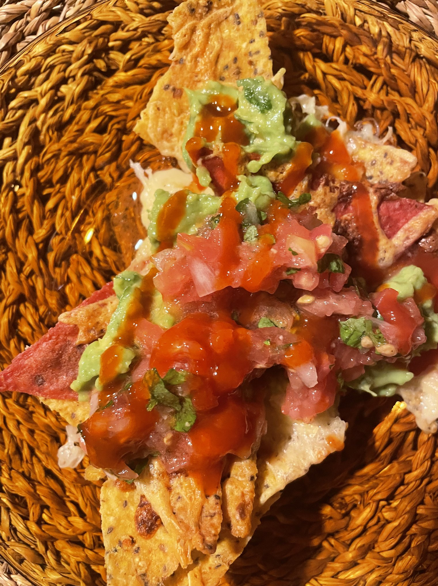

Nachos
Ingredientes
2×
- 2 tomates
- 0.5 cebolla
- cilantro
- zumo de lima
- sal
- 1 aguacate
- 150 g de totopos
- queso rallado mozarella y chedar
- salsa picante

Preparación
Paso 1
Preparar el pico de gallo: picar 2 tomates, 0.5 cebolla y cilantro, y aliñar con zumo de lima y sal.
Paso 2
Chafar 1 aguacate con un poco de lima y sal para el guacamole.
Paso 3
Poner 150 g de totopos en una fuente con queso rallado mozarella y chedar por encima y gratinar 5min a 200ºC.
Paso 4
Servir con el guacamole, el pico de gallo y salsa picante por encima.